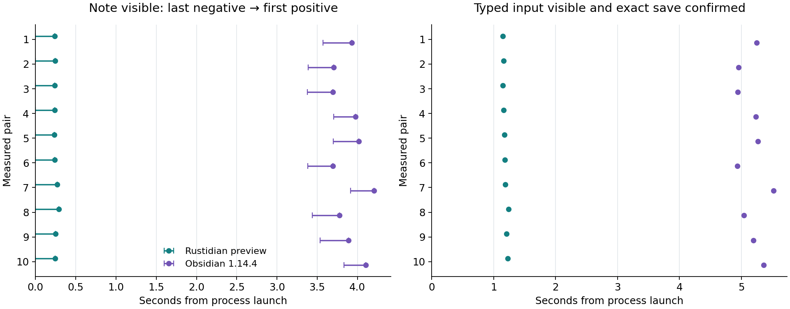

22 OCTOBER 2026 · THE TESTED DEVELOPMENT PREVIEW
Opening the same note
In this local test, a Rustidian development preview displayed the same note sooner than Obsidian in all ten measured pairs.
Both apps then accepted keyboard input and saved the exact expected text.
| Median of ten warmed launches each | Note detected | Input visible + save confirmed |
|---|
| Rustidian preview | 0.24 s | 1.18 s |
|---|
| Obsidian 1.14.4 | 3.91 s | 5.21 s |
|---|
Each app opened its own identical copy of 100 synthetic notes on the same computer. Five practice pairs warmed the apps before
ten measured pairs, with the launch order balanced. There were no failed measured launches or omitted observations.
The screen was a private software display, and a screenshot/text detector checked when the note appeared.
The times are observations with sampling delay, not exact display latency. The input/save times also include detection,
focusing, clicking, typing and confirmation. Other applications were running on the computer.
See the original screens
These inspected pairs show both launch orders. Choose the first or last measured pair and the stage.
Click an image to read the original full-size capture. Each app's image is from its own observed endpoint.
Every measured pair

Open the full-size chart · Open the raw timing rows
On the left, each line runs from the last frame without the note to the first frame with it. Rustidian was already
visible in its first post-window capture, so its reported time is an upper observation bound. On the right, the points show
when input was visible and its exact saved text was confirmed.
What this result covers
This comparison applies to the tested Rustidian c7 development preview and Obsidian 1.14.4,
with this small warmed vault and software display. It does not establish cold-cache, large-vault, everyday physical-desktop,
all-feature or future-release performance. The preview has not passed complete release verification.
Seven negative checks rejected blank, wrong-note, missing-input and frozen-app states. Two resumed positive checks
then confirmed input worked. Exact versions, hashes, settings, checks and remaining differences are in the
technical appendix.